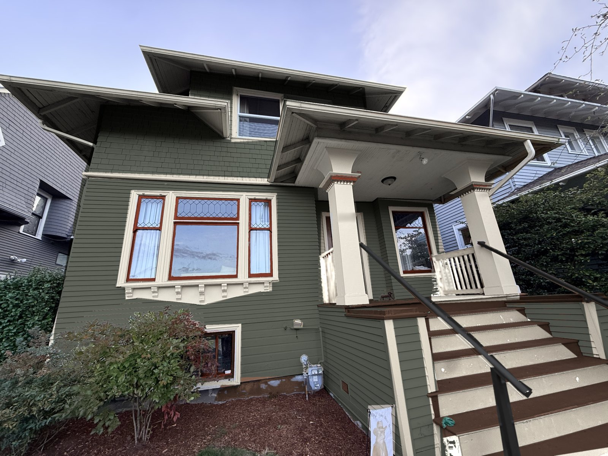

Sherwin-Williams and Benjamin Moore · Seattle Craftsman
Seven color schemes for the house
Each scheme is painted onto a photo of the house, from the greens through a warm gray to the blues. They share one recipe, a classic way to paint a Craftsman: a wall color, cream trim, and a warm terracotta or red on the window sashes and column capitals, with deep brown stairs and black handrails. Pick a scheme, then drag the slider to compare it with the house as it is today.

 Today
Pewter Green
Today
Pewter Green
All seven side by side
How light each paint is
Light reflectance value (LRV) runs from 0 for black to 100 for white. The higher the number, the brighter the wall looks on a gray day.
| Paint | Lightness (LRV) |
|---|
Values as published by Sherwin-Williams and Benjamin Moore, rounded to whole numbers.
How they compare
| Scheme | Cheerful on gray days | Fits a 1910s Craftsman | Broad buyer appeal | Stands apart from neighbors | Upkeep in Seattle |
|---|
These ratings are a designer's judgment, not survey data.
How these were chosen
- Three colors and wood.Each scheme has a wall color, a cream for the trim, and a warm accent, the traditional three-part way of painting a house of this age. The stained front door and dark brown stairs add a deeper fourth note, like natural wood.
- Cream, not white.A warm cream sits comfortably next to terracotta and wood, and looks soft rather than stark on gray days. In this photo the cream covers nearly half of the painted surface (eaves, porch ceiling, columns, trim and risers), which keeps every scheme bright, even the navy.
- Color in small doses.The accent covers only about 2% of the painted surface in this photo: the window sashes and the bands on the column capitals. A warm accent against a cooler wall color makes the windows and porch stand out without making the house loud.
- It builds on what's there.The column capitals already carry a terracotta band, and the sashes are orange-toned stained wood. The schemes carry that accent across the windows in paint. Roycroft Adobe comes from Sherwin-Williams' Arts and Crafts preservation palette.
- Wood-toned stairs, black handrails.The porch floor and stair treads are a deep coffee brown that reads like stained wood and hides dirt, with cream risers so each step stands out. The handrails are black so they read as one crisp line.
- The neighbors.Both neighboring houses are cool blue-gray with white trim. Cream trim and warm accents set every scheme apart from them, even the blues, and the greens and Downing Stone contrast most.
Before choosing
- Narrow it to two or three, then buy sample quarts and paint 2 ft square boards. Look at them against the house on a gray day and a sunny one, since screens can't show paint exactly.
- Van Deusen Blue is a Benjamin Moore scheme and the rest are Sherwin-Williams. Either brand's store can color-match the other's colors, but a match is close rather than exact, so buy each scheme from its own brand.
- The window sashes are stained wood today. Painting them means sanding and priming first. If you'd rather keep the wood, its orange-brown is close to the terracotta and plays the same part, though a clear finish needs refreshing more often than paint.
- Suggested sheens: satin or low-luster on siding and shingles, semi-gloss on trim and sashes, and porch-and-floor enamel with an anti-slip additive on the steps.
- The porch railings are cedar, which bleeds brown tannin stains through paint. Have the painter use a stain-blocking primer first.
- Cream risers show scuffs. Use porch-and-floor enamel on the stairs and plan on occasional touch-ups.
- Every scheme except Craftsman Olive keeps the existing stained wood front door, whose deep red-brown acts as a second accent. Craftsman Olive shows a Roycroft Copper Red door. The door is mostly hidden behind the left column in this photo.
- The upper window is white vinyl, so it stays white in every rendering. Next to cream trim it reads slightly cooler, which is hard to notice from the street.
- Exterior paint needs dry weather, so in Seattle plan the work for late spring through early fall.